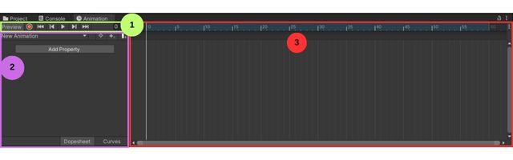
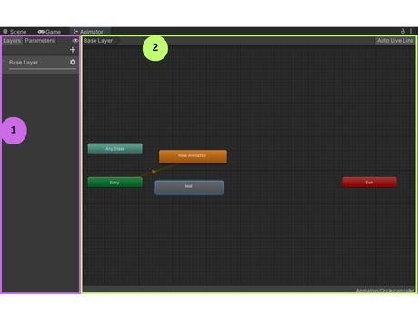
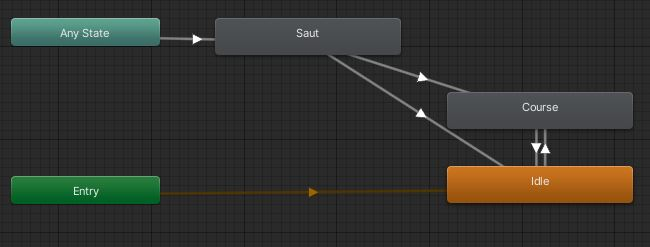

Dans Unity, il est possible d'animer des Sprites avec ce qu'on appelle des Sprite Sheets. Les Sprite Sheets sont en fait une image contenant plusieurs petites images qui une fois mises bout à bout créent une animation.
Importer la Sprite Sheet
Dans le dossier Art de la fenêtre Project, créez un dossier nommé Sprite s'il n'existe pas encore.
Entrez dans le nouveau dossier, faites un clic-droit, puis choisissez Import New Asset et sélectionnez la Sprite Sheet à importer depuis l'explorateur de fichier. Ou encore cliquez et glissez la Sprite Sheet dans la fenêtre Project.
Cliquez sur l'élément que vous venez d'importer, puis assurez-vous dans la fenêtre Inspector que le Texture type de votre image est Sprite(2D and UI).
Ensuite, dans le champ Sprite Mode, vous devez sélectionner Multiple puisqu'on a plusieurs petites images.
Appuyez sur Apply au bas de la fenêtre Inspector.
Maintenant, nous devons dire au logiciel combien il y a de dessins et s'assurer de bien les séparer, pour cela nous appuyons sur le bouton Sprite Editor.
Une nouvelle fenêtre s'ouvre alors. En haut à gauche, appuyez sur le menu Slice et dans le paramètre Type, choisissez Grid by Cell Count.
Dans le paramètre Column & Row, entrez le nombre de colonnes (c) et de rangées (r) de votre Sprite Sheet.
Des carrés rouges devraient maintenant entourer vos dessins. Si tous les dessins sont parfaitement centrés dans un carré, appuyez sur Slice.
Si jamais des carrés sont vides sélectionnez les et appuyez sur delete.
Lorsque vous avez terminé, appuyez sur Apply en haut à droite et fermez la fenêtre.
Dans la fenêtre Project, appuyez sur la flèche à droite de votre Sprite Sheet. Normalement, cela devrait ouvrir de petits icones des dessins de votre feuille.
Animator Controller
Lorsque l'on souhaite créer une animation dans Unity, la création d'une composante Animator Controller est obligatoire. Cette composante permet de gérer les différentes animation d'un objet ou d'un groupe d'objet.
Voici comment créer un Animator Controller:
Rendez-vous dans le dossier Animation dans la fenêtre Project.
Ensuite, faites un clic droit dans cette fenêtre, puis choisissez Create, Animator Controller. Vous pouvez aussi aller dans la barre de Menu et faire Assets, Create, Animator Controller.
Donner un nom à votre Controller et appuyez sur enter.
Animator
Une fois qu'on a créé un Animator Controller, il n'est pas encore en mesure de faire bouger un objet. Pour cela, on doit assigner le Animator Controller à l'objet qu'il animera.
Voici comment faire:
Sélectionnez l'objet qui sera animé dans la fenêtre Hierarchy.
Dans la fenêtre Inspector, appuyez sur le bouton Add Component.
Recherchez la composante Animator à l'aide de la barre de recherche et appuyuez sur celui-ci pour l'ajouter à votre objet.
Ensuite, appuyez sur la cible à droite du champ Controller. Vous verrez alors une liste de tous les Animator Controller disponibles. Appuyez sur celui que vous avez créé pour cet objet. Alternative: Glissez votre Animator Controller depuis la fenêtre Project jusqu'au champ Controller de la composante Animator dans la fenêtre Inspector.
Truc de pro: Pour sauver du temps, vous pouvez aussi simplement cliquer et glisser le Controller Animator de la fenêtre Project à votre objet ouvert dans la fenêtre Inspector.
Fenêtre animation
Dans Unity, la fenêtre animation nous permettra de visualiser nos animations et de les créer plus facilement. Pour l'ouvrir, allez dans la barre de menu, dans l'onglet Window, Animation, Animation. Une fois la fenêtre ouverte, vous pouvez la positionner à l'emplacement de votre choix en appuyant sur son nom en haut à gauche de la fenêtre et en maintenant votre clic enfoncé.
Habituellement, la fenêtre animation est un onglet de la fenêtre Project.

1. Barre de contrôle
La barre de contrôle vous permet de vous déplacer dans l'animation, de la faire jouer et d'enregistrer de nouvelles images clés.
2. Fenêtre propriétés
Cette fenêtre vous permet de choisir les paramètres que vous voulez contrôler dans votre animation et de leur attribuer des valeurs. Elle vous permet aussi de créer de nouveaux clips d'animation ou encore d'ajouter des Keyframes. Les paramètres animables sont nombreux, ce peut être la position, la couleur, la rotation...
3. Ligne du temps
Cette fenêtre est une ligne du temps qui affiche vos keyframes dans le temps. L'unité utilisé est le frame. Par défaut, 60 frames équivalent à 1 seconde dans Unity. Il est possible de changer l'unité avec les trois petits points à la droite de la fenêtre.
Création d'animations
Une fois que notre objet est en mesure de controller les animations, il faut en créer! Pour cette étape, je vous recommande d'avoir les fenêtres Project et Animation ouvertes et séparées.
Voici comment faire:
Premièrement, sélectionnez l'objet que vous souhaitez animer dans la Hierarchy. Ensuite, ouvrez la fenêtre Animation.
Appuyez sur le bouton Create dans la fenêtre Animation. Assurez-vous d'être dans le dossier Animation pour sauvegarder votre nouveau Clip. Vous pouvez créer un sous-dossier pour mieux vous retrouver. Nommez votre clip, puis appuyez sur sauvegarder.
Ensuite, dans la fenêtre Project, appuyez sur la flèche à droite de votre Sprite Sheet pour l'ouvrir et en voir tous les dessins. Sélectionnez un premier dessin, maintenez ensuite la touche Shift enfoncée, puis appuyez sur le dernier dessin que vous souhaitez prendre. Tous les dessins formant l'animation à créer devraient être sélectionnés.
Appuyez sur l'un des dessins et maintenez votre souris enfoncée pendant que vous le glisser vers la fenêtre Animation. Relâchez votre souris au-dessus de la ligne du temps.
Vous pouvez appuyer sur le bouton Play de la fenêtre animation pour voir votre animation. Normalement, celle-ci devrait être trop rapide.
Pour ajuster la vitesse de notre animation, nous allons modifier le Sample rate. Pour ce faire, appuyez sur les trois petits points à la droite des chiffres de la ligne du temps. Cochez le paramètre Show Sample Rate. À la gauche de la fenêtre Animation, vous devriez voir le paramètre Samples apparaître.
Nous devons maintenant modifier le paramètre Samples pour que notre animation joue plus lentement. Pour ce faire, on doit le diminuer. Commencez par entrer la valeur 12 dans le champ et faites rejouer votre animation. Ajustez ensuite le nombre jusqu'à ce que la vitesse vous semble la bonne.
Procédez de la même façon pour créer toutes vos animations. Pour créer une nouvelle animation, appuyez sur le nom de votre animation à gauche de la fenêtre Animation, puis sélectionnez Create New Clip. Pour revoir les animations déjà créées, vous avez seulement à cliquer sur leur nom dans cette liste, puis à appuyer sur Play.
Fenêtre Animator
Dans Unity, la fenêtre Animatior nous permet de visualiser les animations déjà créée et de gérer les transitions entre celles-ci. Pour l'ouvrir, allez dans la barre de menu, dans l'onglet Window, Animation, Animator. Une fois la fenêtre ouverte, vous pouvez la positionner à l'emplacement de votre choix en appuyant sur son nom en haut à gauche de la fenêtre et en maintenant votre clic enfoncé.
Habituellement, la fenêtre Animator est un onglet de la fenêtre Scene.

1. Paramètres
Dans cette section, nous pourrons créer des paramètres pour modifier les transitions de nos animations.
2. Fenêtre Animator
Cette fenêtre permet de visualiser les animations qui ont déjà été créées. Les animations sont affichées en gris, sauf une qui est orange. L'animation qui est orange est celle qui sera appliqué par défaut sur votre objet. Les boîtes Entry, Any State et Exit nous permettent d'animer les transitions à des moments clés. Dans cette fenêtre, les flèches représentent les transitions.
Transitions entre les animations
La première chose à déterminer pour votre Animator Controller est quelle sera votre animation de base. Choisissez l'animation de votre choix, faites un clic droit sur celle-ci, puis appuyez sur Set as Default Layer State. Maintenant, c'est cette animation qui jouera par défaut au début du jeu.
Pour créer une transition à partir de l'animation de base, vous pouvez faire un clic-droit sur celle-ci, puis sélectionnez Make Transition. Appuyez ensuite sur l'animation que vous voulez démarrer.
Une flèche sera ainsi créée. Appuyez sur celle-ci pour voir ses paramètres dans l'inspecteur. La case Has Exit Time est cochée par défaut, elle fait en sorte que l'animation de base prend le temps de terminer son cycle avant de faire la transition vers votre animation. Normalement, on décoche cette case en 2D.
Toujours dans l'inspecteur, appuyez maintenant sur le paramètre Settings. Plusieurs paramètres seront dévoilés. Si vous souhaitez que votre transition soit instantannée, vous devrez modifier la valeur de Transition duration pour 0. Vous verrez alors le petit graphique se modifier. Il représente la transition.
La dernière chose que nous devons faire pour que l'animation joue est de lui ajouter une condition. Pour ce faire, nous devrons créer un nouveau paramètre à notre Animator Controller. En haut à gauche, appuyez sur Parameters, appuyez ensuite sur le +, puis sélectionnez le type de paramètre que vous souhaitez utilisez. Donnez ensuite un nom à votre nouveau paramètre. Par exemple, je pourrais créer un paramètre Float nommé Speed.
Une fois votre paramètre créé, appuyez à nouveau sur la transition que vous voulez contrôler, puis appuyez sur le + du paramètre Conditions dans la fenêtre Inspector.
Établissez alors la condition pour que votre transition s'enclenche. Premièrement, choisissez le bon paramètre, s'il est plus grand ou plus petit et la valeur. Par exemple, la transition se fait si speed est plus grand que 0.01, donc si je me déplace.
Vous pouvez maintenant tester votre transition. Appuyez sur Play pour passer en mode test. Votre animation de base devrait alors jouer. Allez changer la valeur de votre paramètre dans la fenêtre Animator. Retournez dans la fenêtre Game pour voir si l'animation a changé. Vous pouvez sortir du mode Test.
Maintenant, vous pourriez vouloir faire la même transition, mais dans l'autre sens. Répétez les étapes 2 à 7 pour créer la transition inverse.
Si jamais vous voulez créer une transition qui peut partir à tout moment, par exemple, un saut de personnage. Plutôt que de partir de l'animation de base, vous devriez partir votre animation de la boîte Any State. Cette boîte fait en sorte que dès que la condition est respectée, peu importe l'animation qui est en train de jouer, on passera à l'animation appelée. Ainsi, que je sois en Idle ou en train de courir, je pourrai sauter. Attention! La transition de retour, ne se fera pas vers le AnyState, ainsi vous aurez plus qu'une transition de fin à créer. Par exemple, si le paramètre Speed est à 0, je créerai une transition pour retourner à Idle, mais si il est plus grand que 0.01, j'irai en mode course.
Exemple: 
Il est possible de créer une animation vide si vous le souhaitez. Pour cela, faites un clic-droit dans la fenêtre Animator, puis sélectionnez Create State, Empty.
Coder l'Animator Controller
Maintenant, il serait utile de savoir comment modifier les paramètres qu'on a créé dans notre Animator Controller directement dans le code plutôt que de le faire manuellement.
public class PlayerController : MonoBehaviour{
public Animator animator;
private float moveX;
void Update(){
animator.SetFloat("Speed", moveX);
}
}
Explication
On doit créer un paramètre public de type Animator pour pouvoir parler à notre Animator Controller. Une fois le script créé, on devra aller glisser notre Animator dans le paramètre de ce Script.
Ici, moveX est un paramètre aléatoire qui devrait être modifié selon les touches du clavier sur lesquelles le joueur appuie.
Dans le Update, on modifie la valeur du paramètre de type float nommé "Speed" pour lui donner la valeur de moveX. Ici, le paramètre SetFloat, peut aussi être SetInt ou SetBool selon le type de variable que vous avez choisi. Le nom entre "" doit être EXACTEMENT le même que celui que vous avez écrit dans votre Animator Controller. Portez attention aux majuscules! Finalement, la valeur moveX peut être remplacée par ce que vous souhaitez, elle doit avoir le même type que la variable de votre Animator Controller et être modifiée par les actions du joueur.